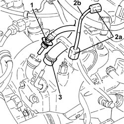
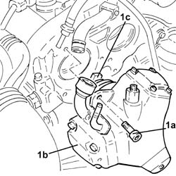
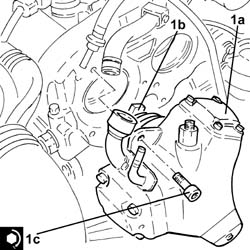
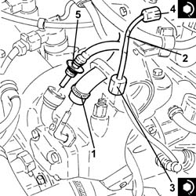

1060E10 pressure pump - r r
- Path
- Procedures > 10 ENGINE UNIT > 1060 DIESEL FUEL INJECTION > 1060E diesel pressure pump > 1060E10 pressure pump - r r
- Kind
- repair procedure (removal / refitting; the operation number is the code)
- Applies to
- engines: 1.3 JTD 16v; all production periods
- Interactive page
- https://sloeber94.github.io/elrnDB-fPnd/en/#/2752595
Applies to: engines: 1.3 JTD 16v; all production periods
 Removing
Removing
 Refitting
Refitting5530B52 Battery DRIP TRAY/SUPPORT - R.R. .
1. Disconnect the rapid connector for the fuel supply pipe from the fuel filter to the pressure pump, pressure pump side.
2. Undo the connectors (2a) and remove the pipe from the pressure pump to the fuel manifold (2b).
3. Loosen the band and disconnect the fuel return pipe from the pressure pump, pressure pump side.

Applies to: engines: 1.3 JTD 16v; all production periods
1. Undo the bolts (1a) and remove the pressure pump (1b) complete with O-ring and joint (1c).

Applies to: engines: 1.3 JTD 16v; all production periods
Refitting
Removing1. Fit the pressure pump (1a) in place complete with coupling (1b) and a new O-ring and tighten the fixing bolts (1c) to the recommended torque.
 | Fastening | Component | Ø | Value (daNm) |
|---|---|---|---|---|
1c | Bolt | PRESSURE PUMP | M7 | (Camshaft housing side) 1.4 ÷ 1.7 |

Applies to: engines: 1.3 JTD 16v; all production periods
1. Connect the fuel return pipe from the pressure pump, pressure pump side, and tighten the band.
2. Fit a new pipe from the pressure pump to the fuel manifold in place and fix it using the connectors without tightening them.
3. Tighten the connector for the pipe from the pressure pump to the single fuel manifold, pump side, to the recommended torque using a suitable spanner.
| Fastening | Component | Ø | Value (daNm) |
|---|---|---|---|---|
3 | Connector | PRESSURE PUMP LINE TO FUEL MANIFOLD | M12 | (Pressure pump side) 2.3 ÷ 2.5 |
4. Tighten the connector for the pipe from the pressure pump to the single fuel manifold, fuel manifold side, to the recommended torque using a suitable spanner.
| Fastening | Component | Ø | Value (daNm) |
|---|---|---|---|---|
4 | Connector | PRESSURE PUMP LINE TO FUEL MANIFOLD | M14 | (Fuel manifold side) 2.7 ÷ 2.9 |
5. Connect the rapid connector for the fuel supply pipe from the filter to the pressure pump, pressure pump side.

Applies to: engines: 1.3 JTD 16v; all production periods